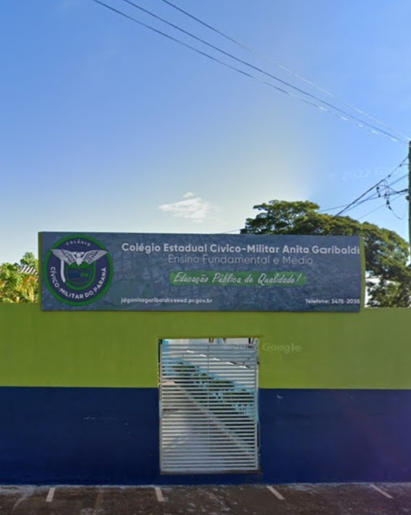
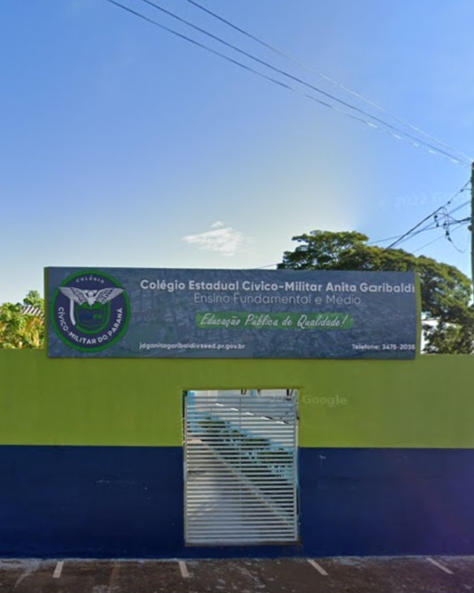

- Escola
- Estudante
O colegio Estadual Civíco Militar Anita garibalde fica localizado na R. dos esdudantes,62-centro na cidade de jardim alegre no Párana
O colegio foi fundado no ano de 1967, mas foi apenas no ano de 2021 que foi introduzido o regime militar
 
